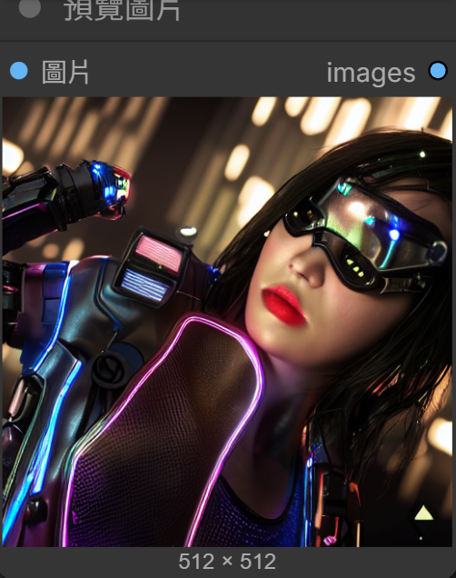
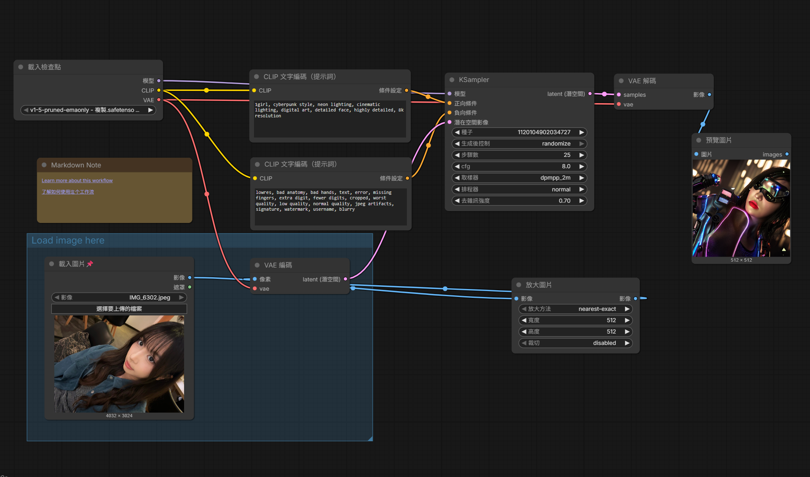

正向提示詞：
1girl, cyberpunk style, neon lighting, cinematic lighting, digital art, detailed face, highly detailed, 8k resolution
反向提示詞：
lowres, bad anatomy, bad hands, text, error, missing fingers, extra digit, fewer digits, cropped, worst quality, low quality, normal quality, jpeg artifacts, signature, watermark, username, blurry
這次作業用了comfy生成圖,也是我第一次使用這個軟體,一開始遇到了很多挫折,產出兩三次圖片都是模糊的,後來修改了提示詞及一些數據等等,終於生出清晰的圖,萬分感動,過程中也有自己摸索一些,雖然還是覺得有點困難,但學到了很多新的東西跟操作經驗!